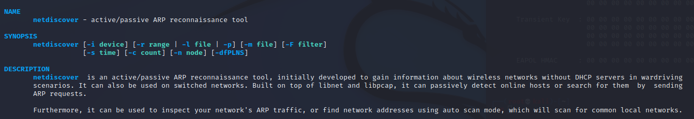

netdiscover
adından da anlaşılacağı üzere bulunduğumuz ağda ki IP adreslerini MAC adresleriyle birlikte tarayıp (IP ve MAC adreslerini eşleştirip) bize göstermeye yarıyor.
örnek olarak bu şekilde bir komut verilerek çalıştırılabilir.
netdiscover -i <interface> -r <range(yani aralık)> -c <count(ne sıklıkla yapılacağı)>

Örnek tarama sonucu: